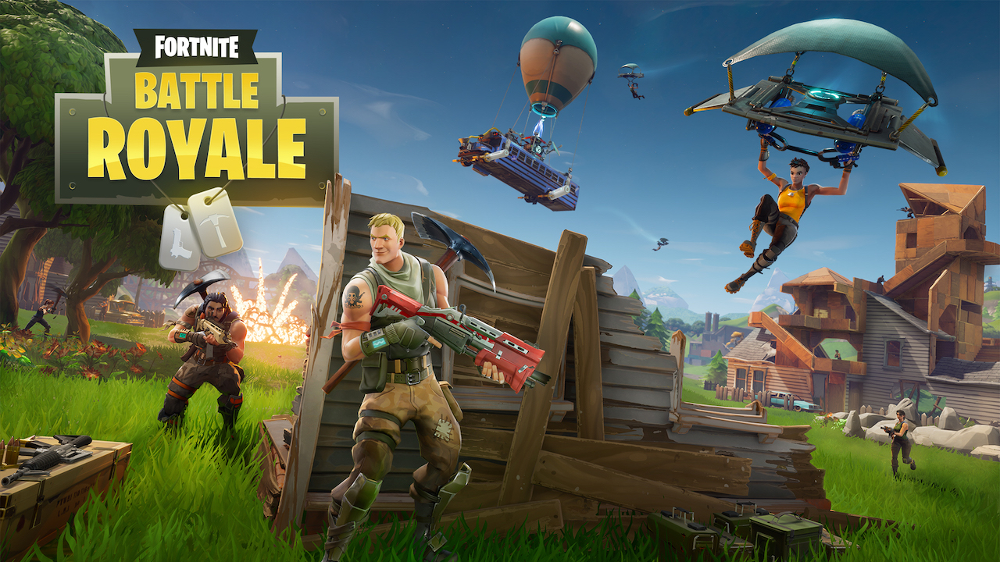
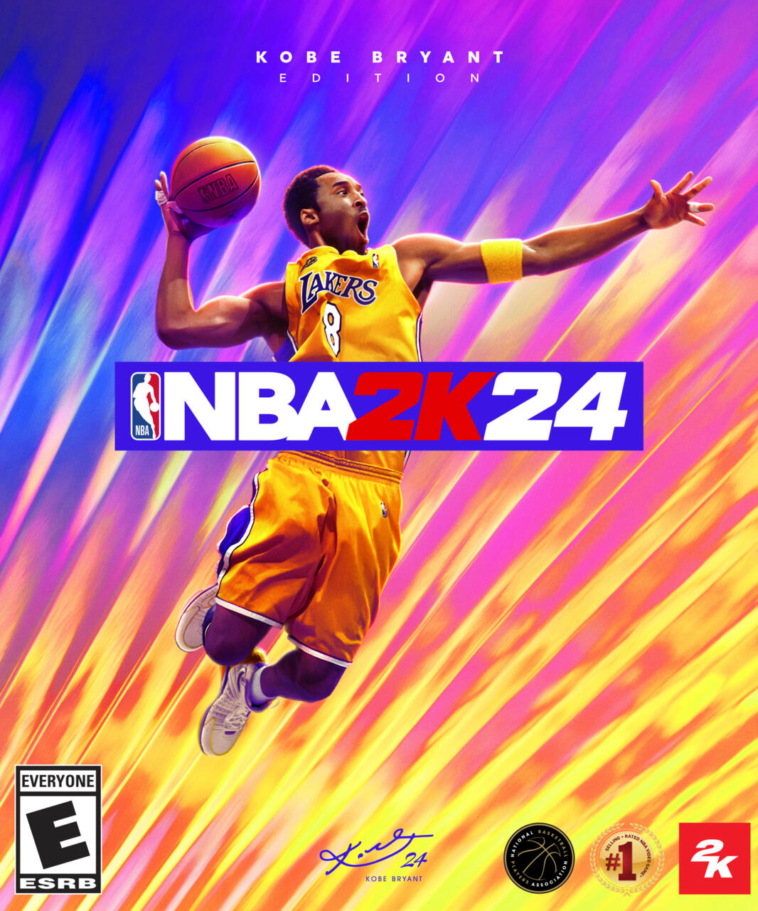
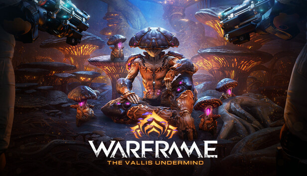

My Favorite Games Screenshots
This is a collection of my favorite games over the many years of games that I have been playing for.

Fortnite
Game | 2017 | Battle Royale
This game has been my top game to go to. Just the nostalgia behind this game is undefeatable. Being able to hop on after school as teens with your friends and just playing, building and fighting people were some of the best times. But also, had so many game modes that would keep us entertained, with the late night conversations were some of the best times.

Minecraft
Game | 2009 | Action-adventure
This game was also apart of my TOP games of all time. Just because how popular this game was, and also how much you can do in this game. For example, just endless adventures with your friends, fighting mobs and exploring were the best times to indulge in. But also, the random conversations we would have is the best.

Call of Duty
Game | 2012 | FPS
Call of Duty will always be my favorite FPS game for many more years to come. Because of how versatile it is with different game modes like Multiplayer, Single player, Zombies and Warzone is what makes this game so good. But, being able to enjoy the voice chats that I have listened to was honestly been interesting, but funny. This game overall helped my aim with a lot of games now and days. I would average around a 3 KDR

NBA 2k
Game | 1999 | Sports
NBA 2k has the heart of my friends and I, because it has been very influental in our lives. From the competitive aspect over the years it has gotten a little bit easier from time to time to adjust to the games playing style. In general it is a fun game to me, so I can conversate with my friends over the most randomest stuff.

Grand Theft Auto V
Game | 2013 | action-adventure
This game by far is my favorite game. Just because of how big the game is, but also the nostalgia it brings to my soul. All the heist my friends and I have been through, all the missions we have done and many more make the game amazing. This would honestly be on a lot of people's Top 3 Games of All Time.

Warframe
Game | 2013 | RPG
This was one of the first games I've played when I joined the PC master race. More like laptop, because I started off with a laptop, but my cousin introduced me to this game and I got to say, it is the one game I have the most hours in. So we can definitly say this deserves to be in my TOP 5 Games of All Time list.